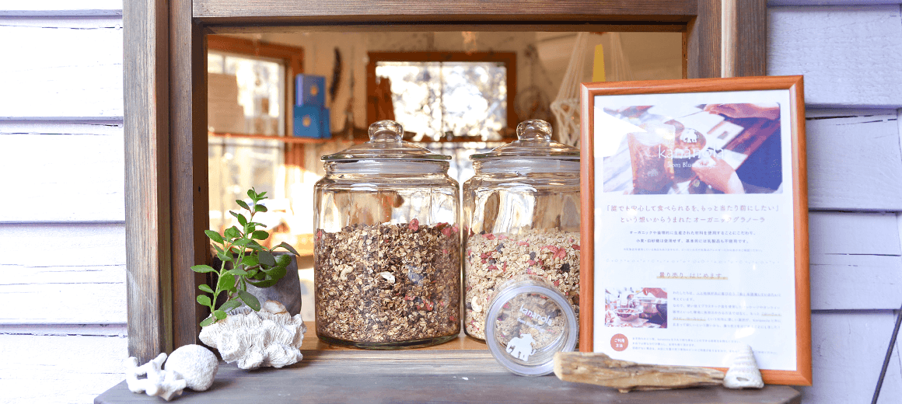

Blue Village Project kananola for Valentine
人と地球がともに喜び合う「食」の提案として、
オーガニックグラノーラ 【kananola】をつくっています。
About
kananola
kananolaをつくりはじめたのは、私がこれまでかかわってきた自閉症や発達障害をもつ子どもたちに、偏食やアレルギーを持っている子が多く、本人やお母さんの「もっと安心して食べられるものがあったらいいな」という切実な願いに触れたことがきっかけです。
「誰でも安心して食べられるを、もっと当たり前にしたい」という想いで、材料をオーガニックや倫理的に生産されたものを使用することにこだわり、小麦、白砂糖、乳製品不使用のオーガニックグラノーラができあがりました。
※乳製品を使用している商品もありますので、ビーガンの方や乳製品アレルギーの方は、表示をご確認ください。
- Blue Villageの世界観を届けること
- 地球との繋がりを感じられること
- 原材料にこだわり、誰でも安心して美味しく食べれること
- ローウェイスト（できる限りゴミを出さない）でローカルに広がる設計を立てること
を大事に、「美味しい」という体験を通して、自然との共生の在り方やライフスタイルをメッセージとして伝えていけたら良いなと思っています。
Blue Village
Blue Village は自由な「つくりて」が集う拡張家族です。
わたしたちの物語は北海道は洞爺湖の月浦に自然と共生する小さな小屋を創るところから始まります。地球を愛するつくりてのプラットホーム『 #あおいろのかくめい 』は人と自然にやさしいサスティナブルなモノ・コト・ヒトをゆるやかに波及していきます。
Line up
-

kananola
小麦、白砂糖、乳製品は使わず、有機のオートミール、フリーズドライフルーツやナッツを使用することで、誰でも美味しくて安心して食べることができるオーガニックグラノーラです。朝ごはんやおやつにもぴったりです。
- 賞味期限
- 3週間程でお召し上がりください。
- 主原料
- 有機オートミール(アメリカ産)、熊本県産米粉、鹿児島県産洗双糖、純正菜種油、有機カカオパウダー、有機カシューナッツ、有機パンプキンシード、*Endanderd species chocolate、有機フリーズドライいちご
*Endangerd Species Chocolate
絶滅危惧種の保全、児童労働、環境保全などの社会問題に取り組むEndangerd Species Chocolate（絶滅危惧種チョコレート）という会社のチョコレートを使用しております。
とってもリッチで風味豊かな、ほんのり塩気を感じる最高に美味しいチョコレートです。そして、このチョコレートは
- フェアトレード（適正価格）
- グルテンフリー（小麦不使用）
- NON GMO（非遺伝子組み換え認定）
- ヴィーガン認定（非動物系認定）
と、身体にも世界にも優しいチョコレートです。
Premium chocolate kananolaはこの特別なチョコレートをたっぷり贅沢に使用しております。
-
Raw chocolate
48度以下の低温で作られる「非加熱」のチョコレートなので、加熱に弱い栄養素も丸ごととることがことができます。
また、このローチョコレートは砂糖や乳製品を使用していませんが、一粒のチョコレートにレーズン、いちじく、なつめ、カシューナッツ、といったたくさんの具材が入っているため、ビターの中にドライフルーツの甘みとナッツのコクを感じて頂けると思います。- 賞味期限
- 冷蔵にて1ヶ月以内を目安にお召し上がりください。
- 主原料
- 有機カカオバター、有機ココナッツバター、有機ココアパウダー、有機レーズン、有機いちじく、有機カシューナッツ、有機棗
Shop
オンラインショップと、店頭にてご購入いただけます。
-
個包装 (170g ¥950)
オンラインショップにて、個包装のkananola、Raw Chocolateを販売！
作りたてをお届けさせて頂きたいので、ご注文から1-2週間程お時間を頂くことがあります。(納期のご希望がある場合は、お問い合わせください。) -

量り売り (100g ¥500〜)
店頭にて、kananolaの量り売りをしています。お手持ちの瓶を持ってきていただけると、とてもうれしいです。お持ちでない方は、お店で瓶をご購入いただくこともできます。
お仕事の休憩のお供に、kananolaはいかがですか？ほんのりとした甘さが疲れた身体に優しく広がります。
kakanola for officeは 1kgから、オフィスに置ける大きな瓶でご用意致します。
オフィスで手軽に食べられる軽食レシピも開発中。
詳しくはメールにてお問い合わせください。
Member
-

kana
食のゆるゆる探求者
kananola発起人、レシピ考案、製造を担当。
セラピストとして、自閉症をもつ子どもたちとかかわる中で、食の大切さに向き合い、薬膳を学びはじめる。人と地球どちらにも愛を込めて作ることを大事に、食材の持つ力を取り入れた食の提案をしている。 -

yoshy
なんでもデザイン厨
kananolaのデザイン全般、製造補助を担当。
叶えたい誰かの「やりたい」という1を、100や1000に拡張し、カタチにし、それを届けるため、デザインと写真を使って、自分の世界、周りの人の世界を視覚化・実現化し、それを循環させている。